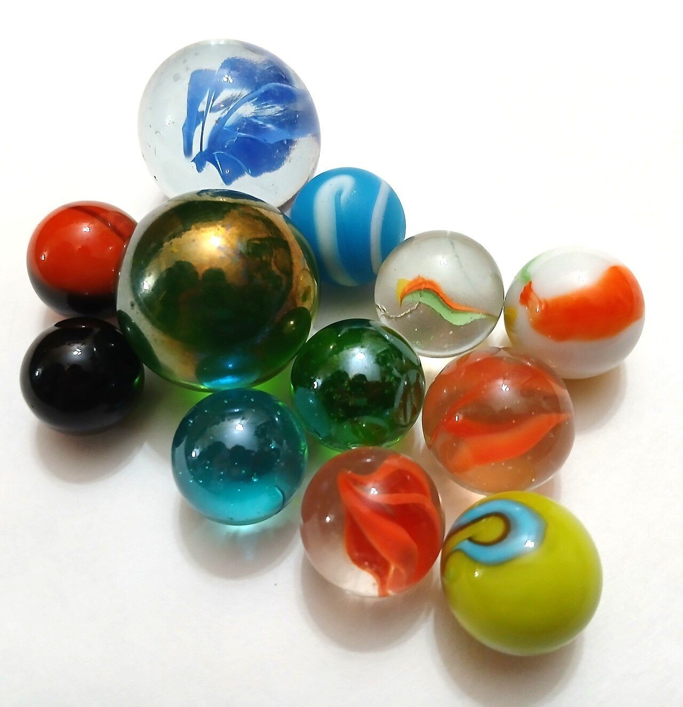

制作側の連想
ガラス溶解炉の部位を、配置図にしてみる
このサイトは、砂などの原料を高温で溶かしてガラスにする「ガラス溶解炉」を、図にしたつもりで作りました。六つの部位に番号をふり、上の図と並べています。制作側の連想で、お店の理念・由来とは無関係です。実際の設備の仕様を示すものでもありません。
凡例
六つの部位
- 1原料投入口ドッグハウス砂や石灰などの原料を、炉の中へ送り込む入口。
- 2溶解槽メルター原料を高温で溶かし、とろりとした液にする、いちばん大きな槽。
- 3バーナーポート炎の口炎を炉の中へ吹き込むための、側面や上部の開口。
- 4蓄熱室リジェネレーター排ガスの熱をれんがにためて、燃焼用の空気をあたためる部屋。
- 5スロートくびれた通り道溶解槽と次の部分とをつなぐ、細く狭い通り道。
- 6作業槽フォアハース溶けたガラスの温度をととのえ、取り出しに備える出口側の部分。
ギャラリー(イメージ)
炎とパンとコーヒー豆の写真


写真はパンやコーヒーのイメージです。お店のものではなく、お店で提供している商品を示すものでもありません。
ギャラリー(イメージ)
ガラスと飲み物の写真


写真はガラス玉とコーヒーのイメージです。お店のものではありません。
ご案内
お店のこと(確認できたものだけ)
| 所在地 | 〒950-0088 新潟県新潟市中央区万代１丁目６−１ |
|---|---|
| 電話 | 準備中 |
| 営業時間 | 準備中 |
| 定休日 | 準備中 |
| ご予約 | 準備中 |
| 駐車場 | 準備中 |
| SNS | Instagram @jesuis_owlthebakery |